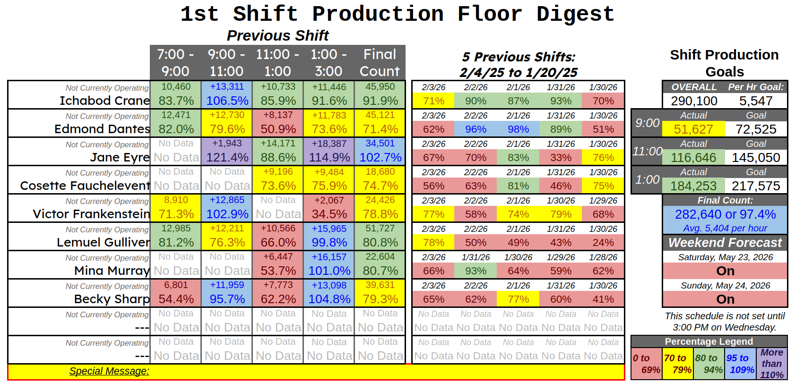
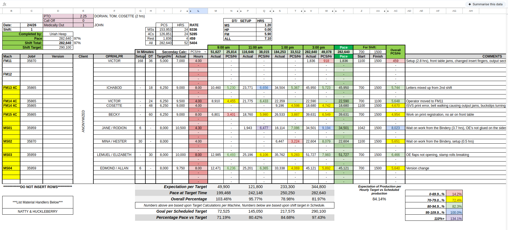

The mailshop needed a dashboard. That was the brief.
The first version went up in two weeks. Within a month it had been redeployed across the rest of the Virginia facility — affixing, bindery, pressroom — and within nine months it had crossed state lines to a second facility in Iowa, brought there by an outside consultant in lieu of contracted external labor. Seven deployments across two facilities, watched on cycling floor displays by 500 to 600 people a day, opened every morning by executives in two states.
The skeleton — the dashboard layout and its control sheet — survived every redeployment unchanged. Everything else was rewritten in service of one principle: the formula lives in one place, the data lives somewhere else, and changing one never requires touching the other.

The brief was one screen. The problem was every screen after it.
The first version went up in two weeks. It worked. It also taught me, immediately, that "a dashboard for the mailshop" was the wrong problem statement — because within the month I was being asked for the same thing for affixing, then bindery, then pressroom. Four departments at one Virginia facility by the time the initial buildout was done. By September the same architecture had been asked to cross to Iowa: another mailroom, another bindery, another pressroom. Seven deployments across two facilities.
The dashboard people saw was the same dashboard every time. The dashboard underneath it could not be, because every department had different machines, different operator counts, different shifts, different goals, and different definitions of what a "good hour" looked like.
What the spreadsheet had to stop doing.
-
Notice what makes a spreadsheet unmaintainable.
The version that ran for two weeks did everything the right dashboard does and nothing the right dashboard needs to keep doing. Goals were hardcoded into the cells that displayed them. Operator names were typed into the formulas that referenced them. Shift boundaries lived in seventy different places. When the first request came in to redeploy it for another department, the honest accounting was that I'd be rebuilding it from scratch, because every parameter I'd want to change was scattered across the file in a way that no diff and no find-and-replace could reach safely. That's the failure mode I needed to design out before the second deployment, because I could already see the third and fourth coming.
-
Separate the formulas from the data they act on.
The core architectural move: every dashboard cell became a formula that resolves its inputs at runtime against a control sheet. The display says "Ichabod Crane, 9:00 slot, 106.5%" not because someone typed his name into the cell but because the formula reads which operator is assigned to that machine, that shift, that day, and pulls the corresponding count from the production digest. Change the assignment on the control sheet and the display updates. Change the goal — same. Change the shift boundaries — same. Seventy cells stayed in sync because none of them held the parameter being changed; they all looked it up.
-
Build the parameters into a single named structure.
Dash Control(the sheet labeled DC) became the one place where shift starts, shift ends, operator rosters, goal values, machine assignments, and date references live. The dashboard reads DC. The production digests read DC. The daily sheets read DC. When a new department comes online, DC gets a new column set, the dashboard formulas don't change at all, and the variant deploys in hours rather than weeks. The work of redeployment moved from rewriting formulas to populating a config sheet — which is the same difference, in spreadsheet terms, between editing source code and editing an environment file. -
Let the visual layer carry the human signal.
Operations told me to color the percentage cells red below 70, green between 70 and 90, and blue above 90. I compressed the bands, added yellow at the 70–79 transition, and added a fifth tier in purple above 110. The purple band was the design choice that mattered most and the one that wasn't asked for. When I was supervising the night shift, I called the operators who landed in purple "Royalty," and they kept showing up for it. A dashboard that only flags failure produces a workforce that only watches for failure. A dashboard with a tier that says you did something rare produces a workforce that watches for the rare thing. The conditional formatting cost nothing to add. The behavior change wasn't free, but it wasn't billed to the spreadsheet.
-
The cascade matters more than the dashboard.
By February 2025, the night shift was holding a 20% production uplift over the baseline I inherited in October. Other things drove the climb — staffing decisions, scheduling, the way the shift was run. The dashboard's contribution was that it gave the climb something to hold onto. Operators saw their own numbers in close to real time. Supervisors saw which machines were trailing the goal before the shift was lost. Executives in two states had the same view I did at three in the morning. The number held for nine months. The week after I left supervision, it stopped holding — which is the honest reading of how much of the lift was the spreadsheet and how much was the person running the shift. The spreadsheet was the floor under the number. It was not the engine.
What did the daily sheets look like underneath.
A daily sheet — there are two per day, one per shift, sixty-five and counting in this variant alone — is the data layer the dashboard reads. Each one is a structured grid of operator assignments, machine-class breakdowns, two-hour production windows, and a rolling five-shift comparison band. The daily sheet doesn't compute anything that matters to the dashboard; it stores the inputs that the dashboard's formulas resolve against. New day, new sheet, populated from a template. The template is the only place the structure is defined, and the structure hasn't changed across any of the seven deployments.

A few details worth naming, because they're the kind of thing that's easy to skip past:
- Color-coded percentage bands — five tiers, applied via conditional formatting against the per-hour goal. The bands are visible at floor distance from the display screen, which is the only test for whether a floor dashboard is doing its job.
- Rolling five-shift comparison — every operator's last five shifts sit next to their current one, color-coded the same way. The dashboard doesn't just tell you how today is going; it tells you whether today is consistent with this person's last week or whether something is different. Different is the signal worth investigating.
- Goal-pacing display — the right-hand panel tracks actual against goal at each two-hour checkpoint, with a final-count projection and an hourly average. The hourly average is the number supervisors check first, because it normalizes against partial shifts.
- "Not Currently Operating" states — the dashboard handles absence and rotation gracefully because the daily sheet, not the dashboard, decides who's assigned where. If a slot is empty on the control sheet, the dashboard renders "Not Currently Operating" instead of a missing reference, and the conditional formatting doesn't fire on the blank cells.
- Weekend forecast — a small panel on the right shows whether Saturday and Sunday are scheduled to run, with the caveat that the schedule isn't set until Wednesday afternoon. That panel exists because operators asked. The dashboard was the place they were already looking; it became the place that information lived.
Provenance
The dashboard is still on the screen at Innovairre. Executives still open it. Operators still see their numbers on it.